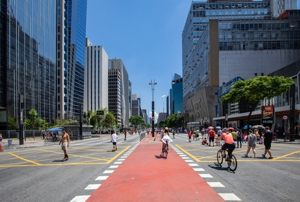

Paulista Avenue
Paulista Avenue (Avenida Paulista in Portuguese, Paulista being the demonym for those born in the state of São Paulo) is one of the most important avenues in São Paulo, Brazil.Learn More

São Paulo is the most populous city in Brazil, and is the capital of the state of São Paulo, the most populous and wealthiest Brazilian state, located in the country's Southeast Region. Listed by the GaWC as an alpha global city, São Paulo is the most populous city proper in the Americas, the Western Hemisphere and the Southern Hemisphere, as well as the world's 4th largest city proper by population. Additionally, São Paulo is the largest Portuguese-speaking city in the world. It exerts strong international influences in commerce, finance, arts and entertainment. The city's name honors the Apostle, Saint Paul of Tarsus.
Paulista Avenue (Avenida Paulista in Portuguese, Paulista being the demonym for those born in the state of São Paulo) is one of the most important avenues in São Paulo, Brazil.Learn More
Botanic Garden The Botanical Garden of São Paulo was founded in its current location in 1928 by the botanist Frederico Carlos Hoehne. Today, the Garden is also home to the state's Botanical Institute.Learn More
Pátio do Colégio is the name given to the historical Jesuit church and school in the city of São Paulo, Brazil. The name is also used to refer to the square in front of the church. The Pátio do Colégio marks the site where the city was founded in 1554.Learn More
São Paulo Cathedral is the cathedral of the Roman Catholic Archdiocese of São Paulo, Brazil. Its current and seventh Metropolitan Archbishop is Dom Odilo Pedro Cardinal Scherer, appointed by Pope Benedict XVI on March 21, 2007, and installed on April 29 of the same year.Learn More
The São Paulo Museum of Art is an art museum located on Paulista Avenue in the city of São Paulo, Brazil. It is well known for its headquarters, a 1968 concrete and glass structure designed by Lina Bo Bardi, whose main body is supported by two lateral beams over a 74 metres (243 ft) freestanding space. It is considered a landmark of the city and a main symbol of modern Brazilian architecture.Learn More
Ibirapuera Park was the first metropolitan park in São Paulo, designed along the lines of other great English landscape gardens built in the 20th century in major cities around the globe, but inspired on modern drafts from the landscape architect Roberto Burle Marx. It was inaugurated on 21 August 1954 for the 400th anniversary of the city of São Paulo with buildings designed by architect João Felipe Pereira and landscape by agronomist Otávio Augusto Teixeira Mendes.Learn More
It was designed by the architect Francisco Ramos de Azevedo and inaugurated on January 25, 1933 as a wholesale and retail post specializing in fruits, vegetables, cereals, meats, spices and other food products. The market is located in the Mercado neighborhood, a name that references the market, in the historic center of São Paulo.Learn More
The Football Museum is a space in the city of São Paulo, Brazil dedicated to the most different subjects involving the practice, history and curiosities revolving around football in Brazil and in the world. This cultural space was built inside Pacaembu Stadium, located at Charles Miller Square in the Pacaembu neighborhood, on the west side of the city.Learn More
Beco do Batman is the nickname for the area around Rua Gonçalo Afonso and Rua Medeiros de Albuquerque in the Vila Madalena neighborhood of São Paulo. Beco do Batman is a popular tourist destination because of the dense concentration of graffiti that line the streets.Learn More